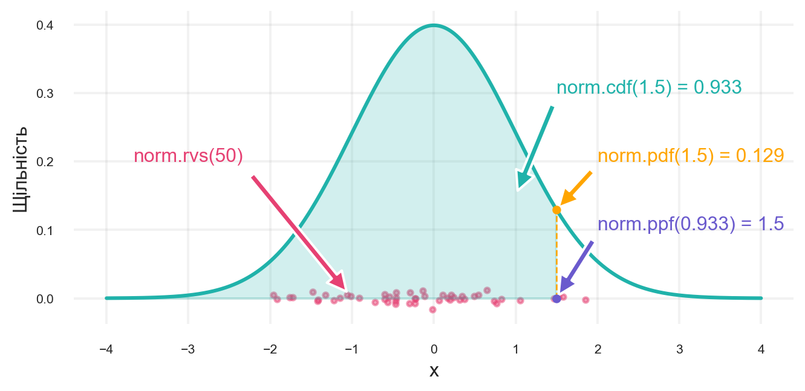

x = np.linspace(-5, 5, 1000)
params = [(0, 1), (0, 2), (1, 1), (1, 2), (2, 1), (2, 2)]
for mu, sigma in params:
plt.plot(x, norm.pdf(x, mu, sigma), label=f'μ={mu}, σ={sigma}')
plt.xlabel('x')
plt.ylabel('f(x)')
plt.legend()
plt.show()3 \(Z\)-критерій Фішера
У цьому розділі ми розглянемо \(Z\)-критерій Фішера, який використовується для перевірки гіпотез про середнє значення генеральної сукупності з відомою дисперсією.
Далі, для виведення критеріїв нам потрібен нормальний розподіл. Потому що саме цьому розподілу підпорядковується середнє вибірок. Тож давайте подивимося, що це взагалі таке, як з ним працювати в Python й які в нього є властивості.
3.1 Нормальний розподіл
Нормальний розподіл \(\mathcal{N}(\mu, \sigma^2)\) — неперервний розподіл, у якому щільність спадає зі збільшенням відстані від математичного сподівання \(\mu\) за швидкістю, пропорційною квадрату відстані (див. формулу 3.1).
\[ f(x) = \frac{1}{\sigma\sqrt{2\pi}}e^{-\frac{1}{2}\left(\frac{x-\mu}{\sigma}\right)^2}, \tag{3.1}\] де \(x\) — випадкова величина, \(\mu\) — математичне сподівання, \(\sigma^2\) — дисперсія.
На графіку нижче показано, як виглядає нормальний розподіл з різними параметрами \(\mu\) та \(\sigma^2\).

3.2 Нормальний розподіл у Python
Нехай ми хочемо задати розподіл \(\mathcal{N}(\mu, \sigma^2)\). Для цього є клас norm1.
Параметри класу:
loc— це \(\mu\)scale— це \(\sigma\), або стандартне відхилення. Не дисперсія!
Методи класу:
rvs()— згенерувати випадкові числа з розподілу \(\mathcal{N}(\mu, \sigma^2)\)cdf(x)— кумулятивна функція розподілу (cumulative distribution function, CDF) в точці \(x\), ймовірність того, що випадкова величина \(X\) менша або дорівнює \(x\).ppf(q)— квантиль функції розподілу (percent-point function, PPF) для ймовірності \(q\), ймовірність того, що випадкова величина \(X\) менша або дорівнює \(q\).pdf(x)— щільність ймовірності (probability density function, PDF) в точці \(x\), ймовірність того, що випадкова величина \(X\) дорівнює \(x\).
CDF та PPF — це функції, які пов’язані між собою. CDF визначає ймовірність того, що випадкова величина \(X\) менша або дорівнює \(x\), а PPF визначає значення \(x\), для якого ймовірність \(X\) менша або дорівнює \(q\).
Ініціалізуємо клас norm з параметрами \(\mu = 0\) та \(\sigma = 1\) (стандартний нормальний розподіл). Далі, згенеруємо випадкову вибірку з 50 спостережень, а також обчислимо PDF, CDF та PPF для \(x = 1.5\).
1std_norm = norm(loc=0, scale=1)
2rnorm = std_norm.rvs(size=50, random_state=42)
3dnrom = std_norm.pdf(1.5)
4pnorm = std_norm.cdf(1.5)
5qnorm = std_norm.ppf(0.933)- 1
-
Ініціалізація класу
normз параметрами \(\mu = 0\) та \(\sigma = 1\). - 2
- Генерація випадкової вибірки з 50 спостережень.
- 3
- Обчислення PDF для \(x = 1.5\).
- 4
- Обчислення CDF для \(x = 1.5\).
- 5
- Обчислення PPF для \(q = 0.933\).
Візуалізація методів класу norm показана на рисунку 3.2.

norm
Документація доступна за посиланням https://docs.scipy.org/doc/scipy/reference/generated/scipy.stats.norm.html.↩︎